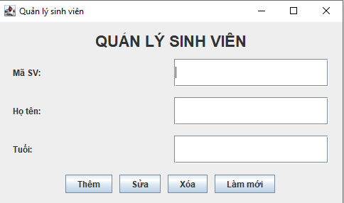
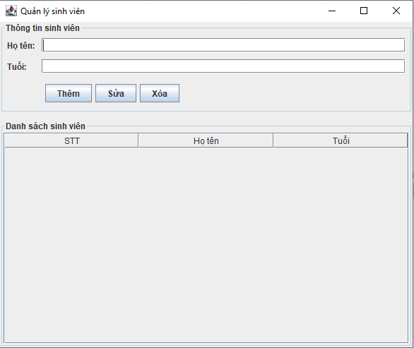
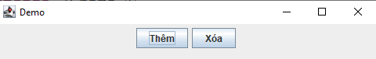
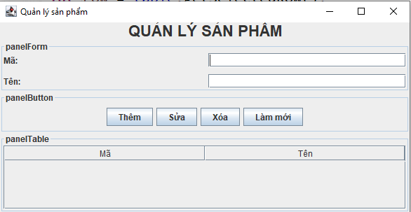

PHẦN 1. CƠ BẢN JAVA SWING
1.1. Java Swing là gì?
Java Swing là thư viện giao diện đồ họa của Java, cho phép chúng ta xây dựng các ứng dụng desktop có giao diện trực quan.
Ví dụ, thay vì chạy chương trình trên Console:
===== QUẢN LÝ SINH VIÊN ===== Nhập mã sinh viên: SV01 Nhập họ tên: Nguyễn Văn An Nhập tuổi: 20
Swing cho phép xây dựng giao diện:

Như vậy: Swing cung cấp các thành phần để xây dựng giao diện đồ họa cho ứng dụng Java Desktop.
1.2. Swing nằm ở đâu trong Java?
Một chương trình Java có thể xây dựng nhiều loại ứng dụng:
Java │ ├── Console Application │ ├── Desktop Application │ └── Swing │ ├── Web Application │ ├── Servlet/JSP │ └── Spring Boot │ └── Các loại ứng dụng khác
Swing chủ yếu được sử dụng để xây dựng ứng dụng Desktop.
1.3. Một số thành phần quan trọng của Swing
Swing cung cấp rất nhiều component. Một số component quan trọng:
| Component | Công dụng |
|---|---|
| JFrame | Cửa sổ ứng dụng |
| JPanel | Khu vực chứa component |
| JLabel | Hiển thị chữ |
| JButton | Nút bấm |
| JTextField | Nhập một dòng |
| JPasswordField | Nhập mật khẩu |
| JTextArea | Nhập nhiều dòng |
| JCheckBox | Ô lựa chọn |
| JRadioButton | Lựa chọn một trong nhiều |
| JComboBox | Danh sách dropdown |
| JTable | Hiển thị dữ liệu dạng bảng |
| JScrollPane | Thanh cuộn |
1.4. Mô hình tư duy khi học Swing
Khi xây dựng giao diện Swing, cần tư duy theo cấu trúc:
JFrame
│
├── JPanel
│ ├── JLabel
│ ├── JTextField
│ └── JButton
│
└── JPanel
└── JTable
Có thể hình dung:
- JFrame = Cửa sổ
- JPanel = Khu vực/container
- Component = Thành phần giao diện
Ví dụ một phần mềm:

Đây là tư duy rất quan trọng xuyên suốt toàn bộ Swing.
1.5. Tạo chương trình Swing đầu tiên
Tạo class:
public class Main {
public static void main(String[] args) {
JFrame frame = new JFrame();
frame.setVisible(true);
}
}
Chạy chương trình sẽ xuất hiện một cửa sổ. Tuy nhiên cửa sổ chưa có kích thước phù hợp.
1.6. Thiết lập kích thước
Sử dụng: frame.setSize(width, height);
Ví dụ: frame.setSize(800, 600);
Trong đó: 800 = chiều rộng, 600 = chiều cao
1.7. Đặt tiêu đề
Có thể đặt ngay khi tạo: JFrame frame = new JFrame("Quản lý sinh viên");
Hoặc: frame.setTitle("Quản lý sinh viên");
1.8. Xử lý khi đóng cửa sổ
Sử dụng: frame.setDefaultCloseOperation(JFrame.EXIT_ON_CLOSE);
public class Main {
public static void main(String[] args) {
JFrame frame = new JFrame("Quản lý sinh viên");
frame.setSize(800, 600);
frame.setDefaultCloseOperation(JFrame.EXIT_ON_CLOSE);
frame.setVisible(true);
}
}
1.9. Đưa cửa sổ ra giữa màn hình
frame.setLocationRelativeTo(null);
Thông thường nên dùng sau khi thiết lập kích thước.
1.10. Thứ tự xây dựng JFrame
1. Tạo JFrame
↓
2. Đặt title
↓
3. Đặt size
↓
4. Đặt close operation
↓
5. Đặt vị trí
↓
6. Thêm component
↓
7. Hiển thị
public class Main {
public static void main(String[] args) {
JFrame frame = new JFrame("Quản lý sinh viên");
frame.setSize(800, 600);
frame.setDefaultCloseOperation(JFrame.EXIT_ON_CLOSE);
frame.setLocationRelativeTo(null);
frame.setVisible(true);
}
}
PHẦN 2. CÁC COMPONENT CƠ BẢN
2.1. JPanel
JPanel là gì? JPanel là một container dùng để chứa và nhóm các component.
Ví dụ: JPanel panel = new JPanel();
Thêm component: panel.add(new JButton("Thêm"));
Sau đó đưa panel vào JFrame: frame.add(panel);
2.2. Ví dụ JFrame + JPanel
public class Main {
public static void main(String[] args) {
JFrame frame = new JFrame("Demo");
frame.setSize(500, 300);
frame.setDefaultCloseOperation(JFrame.EXIT_ON_CLOSE);
JPanel panel = new JPanel();
panel.add(new JButton("Thêm"));
panel.add(new JButton("Xóa"));
frame.add(panel);
frame.setLocationRelativeTo(null);
frame.setVisible(true);
}
}
Giao diện:

2.3. Tại sao phải dùng JPanel?
Không nên xây dựng một giao diện lớn bằng cách đưa tất cả component trực tiếp vào JFrame. Thay vào đó chia thành các khu vực.
JFrame │ ├── panelForm │ ├── panelButton │ └── panelTable
Ví dụ phần mềm quản lý:

Đây là cách tổ chức giao diện dễ bảo trì hơn.
2.4. JLabel
JLabel dùng để hiển thị văn bản.
Thêm vào panel: panel.add(label);
JTextField nameField = new JTextField(20);
panel.add(nameLabel);
panel.add(nameField);
Kết quả: Họ tên: [____________________]
2.5. JButton
JButton tạo nút bấm.
JButton btnEdit = new JButton("Sửa");
JButton btnDelete = new JButton("Xóa");
panel.add(btnAdd);
panel.add(btnEdit);
panel.add(btnDelete);
2.6. JTextField
JTextField dùng để nhập dữ liệu một dòng.
Thiết lập độ rộng: JTextField txtName = new JTextField(20);
Lấy dữ liệu
Gán dữ liệu
Xóa dữ liệu
2.7. JPasswordField
Dùng để nhập password.
Lấy password:
JPasswordField txtPassword = new JPasswordField(20);
panel.add(lblPassword);
panel.add(txtPassword);
2.8. JTextArea
JTextArea dùng nhập dữ liệu nhiều dòng.
Ví dụ:

Lấy dữ liệu: String description = txtDescription.getText();
2.9. JCheckBox
Dùng để lựa chọn dạng checkbox.
Có thể chọn nhiều:
JCheckBox cbPython = new JCheckBox("Python");
JCheckBox cbJs = new JCheckBox("JavaScript");
Giao diện:
☐ Java ☐ Python ☐ JavaScript
Kiểm tra:
System.out.println("Đã chọn Java");
}
2.10. JRadioButton
Dùng khi người dùng cần chọn một trong nhiều lựa chọn.
JRadioButton female = new JRadioButton("Nữ");
Cần ButtonGroup:
group.add(male);
group.add(female);
Khi đó: ○ Nam ○ Nữ chỉ có thể chọn một.
2.11. JComboBox
JComboBox tạo danh sách dropdown.
Thêm dữ liệu:
combo.addItem("Nữ");
Hoặc:
JComboBox<String> combo = new JComboBox<>(genders);
Lấy giá trị: String gender = combo.getSelectedItem().toString();
PHẦN 3. LAYOUT MANAGER
Đây là phần cực kỳ quan trọng khi học Swing.
3.1. Layout Manager là gì?
Layout Manager chịu trách nhiệm sắp xếp vị trí các component trong container.
Ví dụ: panel.setLayout(new FlowLayout());
Thay vì tự tính toán vị trí, Layout Manager sẽ tự sắp xếp.
3.2. FlowLayout
FlowLayout sắp xếp component theo hàng ngang.
Ví dụ:
panel.add(new JButton("Sửa"));
panel.add(new JButton("Xóa"));
Kết quả: [Thêm] [Sửa] [Xóa]
Khi không còn đủ chỗ, component có thể xuống dòng.
3.3. Căn giữa
Có thể chỉ định căn lề:
Các lựa chọn: FlowLayout.LEFT, FlowLayout.CENTER,
FlowLayout.RIGHT.
3.4. BorderLayout
BorderLayout chia container thành 5 khu vực:

Các vị trí: BorderLayout.NORTH, BorderLayout.SOUTH,
BorderLayout.WEST, BorderLayout.EAST,
BorderLayout.CENTER.
3.5. Ví dụ BorderLayout
frame.add(new JButton("TOP"), BorderLayout.NORTH);
frame.add(new JButton("BOTTOM"), BorderLayout.SOUTH);
frame.add(new JButton("LEFT"), BorderLayout.WEST);
frame.add(new JButton("RIGHT"), BorderLayout.EAST);
frame.add(new JButton("CENTER"), BorderLayout.CENTER);
3.6. Tại sao BorderLayout quan trọng?
Nó rất phù hợp để xây dựng giao diện quản lý.
+------------------------------------------+ | HEADER | +------------------------------------------+ | | | CONTENT | | | +------------------------------------------+ | FOOTER | +------------------------------------------+
Có thể thiết kế: NORTH → Tiêu đề, CENTER → Form + JTable, SOUTH → Các button.
3.7. GridLayout
GridLayout chia container thành lưới.
Nghĩa là: 3 hàng, 2 cột.

package JW;
import javax.swing.*;
import java.awt.*;
public class Demo extends JFrame {
public Demo() {
setTitle("GridLayout");
setSize(400, 250);
setDefaultCloseOperation(JFrame.EXIT_ON_CLOSE);
setLocationRelativeTo(null);
// GridLayout: 3 dòng, 2 cột
JPanel panel = new JPanel(
new GridLayout(3, 2, 10, 10)
);
// Dòng 1
panel.add(new JLabel("Họ tên:"));
panel.add(new JTextField());
// Dòng 2
panel.add(new JLabel("Tuổi:"));
panel.add(new JTextField());
// Dòng 3
panel.add(new JLabel("Email:"));
panel.add(new JTextField());
add(panel);
setVisible(true);
}
public static void main(String[] args) {
new Demo();
}
}
PHẦN 4. EVENT HANDLING
4.1. Event là gì?
Event là sự kiện xảy ra khi người dùng tương tác với chương trình.
Ví dụ: Click button, chọn checkbox, chọn dropdown, nhập dữ liệu, đóng cửa sổ.
User ↓ Click "Thêm" ↓ Event ↓ Chương trình xử lý ↓ Thêm dữ liệu
4.2. ActionListener
Đối với button, thường sử dụng ActionListener.
btnHello.addActionListener(e -> {
System.out.println("Hello");
});
Khi click: [Hello] → Hello
4.3. Xử lý button bằng lambda
System.out.println("Click Thêm");
});
Cũng có thể viết cách truyền thống:
@Override
public void actionPerformed(ActionEvent e) {
System.out.println("Click Thêm");
}
});
Khi dạy học viên nên giới thiệu cả hai, nhưng trong code thực tế có thể ưu tiên lambda cho đoạn xử lý ngắn.
4.4. Button + JTextField
Đây là bài tập rất quan trọng.
JButton btnShow = new JButton("Hiển thị");
btnShow.addActionListener(e -> {
String name = txtName.getText();
System.out.println(name);
});
Nhập: Nguyễn Văn An → Click [Hiển thị] → txtName.getText() → "Nguyễn Văn An"
4.5. Hiển thị bằng JOptionPane
Thay vì System.out.println:
String name = txtName.getText();
JOptionPane.showMessageDialog(null, "Xin chào " + name);
});
4.6. Kiểm tra dữ liệu nhập
String name = txtName.getText();
if (name.isEmpty()) {
JOptionPane.showMessageDialog(null, "Vui lòng nhập họ tên");
return;
}
JOptionPane.showMessageDialog(null, "Thêm thành công");
});
Đây là kỹ thuật sẽ được sử dụng rất nhiều trong form CRUD.
4.7. Xử lý nút Làm mới
btnReset.addActionListener(e -> {
txtName.setText("");
txtAge.setText("");
txtEmail.setText("");
});
Click Làm mới → Xóa dữ liệu trên Form → Form trở về trạng thái ban đầu
4.8. Xử lý JCheckBox
JButton btnCheck = new JButton("Kiểm tra");
btnCheck.addActionListener(e -> {
if (cbJava.isSelected()) {
JOptionPane.showMessageDialog(null, "Bạn đã chọn Java");
}
});
4.9. Xử lý JComboBox
// Khi click:
String gender = combo.getSelectedItem().toString();
4.10. Xử lý RadioButton
System.out.println("Nam");
} else if (female.isSelected()) {
System.out.println("Nữ");
}
4.11. Bài thực hành Form đăng nhập
Đây là bài thực hành tổng hợp đầu tiên.
+--------------------------------+ | ĐĂNG NHẬP | | | | Username: [______________] | | Password: [______________] | | | | [Đăng nhập] | +--------------------------------+
public class LoginFrame extends JFrame {
private JTextField txtUsername;
private JPasswordField txtPassword;
private JButton btnLogin;
public LoginFrame() {
setTitle("Đăng nhập");
setSize(400, 250);
setDefaultCloseOperation(JFrame.EXIT_ON_CLOSE);
setLocationRelativeTo(null);
JPanel panel = new JPanel();
JLabel lblUsername = new JLabel("Username:");
txtUsername = new JTextField(20);
JLabel lblPassword = new JLabel("Password:");
txtPassword = new JPasswordField(20);
btnLogin = new JButton("Đăng nhập");
panel.add(lblUsername);
panel.add(txtUsername);
panel.add(lblPassword);
panel.add(txtPassword);
panel.add(btnLogin);
add(panel);
btnLogin.addActionListener(e -> {
String username = txtUsername.getText();
String password = new String(txtPassword.getPassword());
if (username.isEmpty() || password.isEmpty()) {
JOptionPane.showMessageDialog(this, "Vui lòng nhập đầy đủ thông tin");
return;
}
JOptionPane.showMessageDialog(this, "Đăng nhập thành công");
});
}
}
public static void main(String[] args) {
LoginFrame frame = new LoginFrame();
frame.setVisible(true);
}
}
PHẦN 5. JTABLE VÀ HIỂN THỊ DỮ LIỆU
5.1. JTable là gì?
JTable là component dùng để hiển thị dữ liệu dưới dạng bảng.

JTable cực kỳ quan trọng khi xây dựng: Quản lý sinh viên, sản phẩm, nhân viên, khách hàng, hóa đơn.
5.2. Tạo JTable đơn giản
Khai báo tên cột:
Dữ liệu:
{1, "Nguyễn Văn An", 20},
{2, "Trần Văn Bình", 21},
{3, "Lê Văn Cường", 22}
};
Tạo JTable:
5.3. Đưa JTable vào JPanel
panel.add(new JScrollPane(table));
5.4. JScrollPane
Nếu JTable có nhiều dòng, cần có thanh cuộn.
frame.add(scrollPane);
package JW;
import javax.swing.*;
import javax.swing.table.DefaultTableModel;
import java.awt.*;
public class Demo extends JFrame {
public Demo() {
setTitle("Danh sách sinh viên");
setSize(500, 300);
setDefaultCloseOperation(JFrame.EXIT_ON_CLOSE);
setLocationRelativeTo(null);
// Tên cột
String[] columns = {
"ID",
"Họ tên",
"Tuổi"
};
// Dữ liệu
Object[][] data = {
{1, "Nguyễn Văn An", 20},
{2, "Trần Văn Bình", 21},
{3, "Lê Văn Cường", 22},
{4, "Phạm Văn Dũng", 23},
{5, "Hoàng Văn Em", 24},
{6, "Đỗ Văn Nam", 25},
{7, "Nguyễn Văn Hải", 26},
{8, "Trần Văn Long", 27}
};
// Tạo JTable
JTable table = new JTable(
new DefaultTableModel(data, columns)
);
// Đặt chiều cao mỗi dòng
table.setRowHeight(30);
// Đưa JTable vào JScrollPane
JScrollPane scrollPane = new JScrollPane(table);
// Thêm vào JFrame
add(scrollPane, BorderLayout.CENTER);
setVisible(true);
}
public static void main(String[] args) {
new Demo();
}
}

5.5. JTable + BorderLayout
tablePanel.add(new JScrollPane(table), BorderLayout.CENTER);
BÀI TẬP SAU PHẦN 5
Bài 1
Tạo giao diện:

Bài 2
Tạo giao diện: